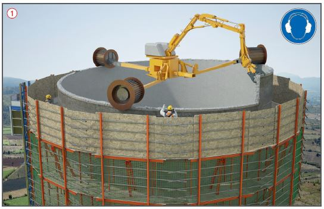
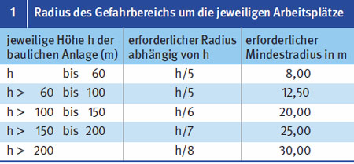
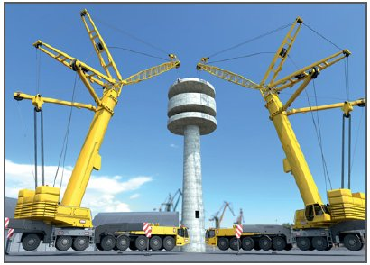

- Umfang und Reihenfolge des Abbruchs,
- Abbruchverfahren,
- erforderliche Gerüste und Absturzsicherungen
 ,
, - Abbruchtiefen und mögliche Auswirkungen auf angrenzende Gebäude,
- Sicherungsmaßnahmen, z. B. Absperrungen von Gefahrbereichen (siehe Tabelle 1).
Abbruch von Türmen, Schornsteinen und Silos |



07/2021